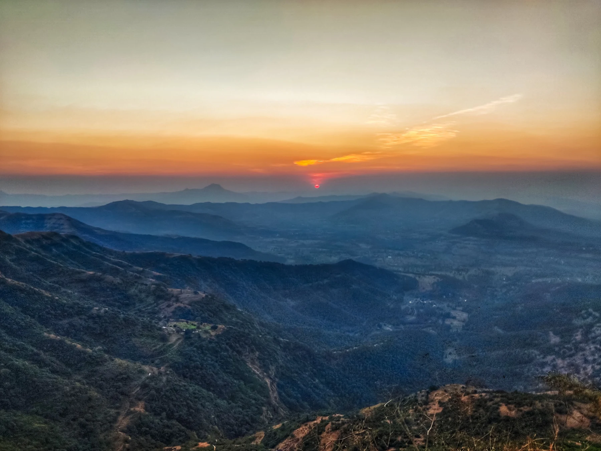
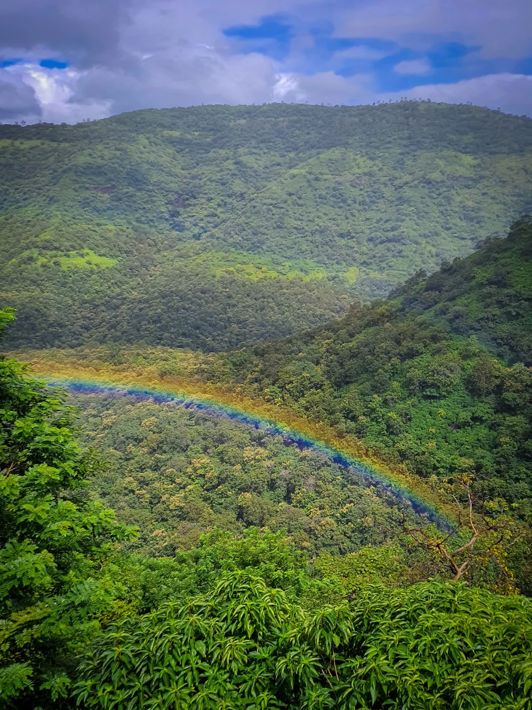
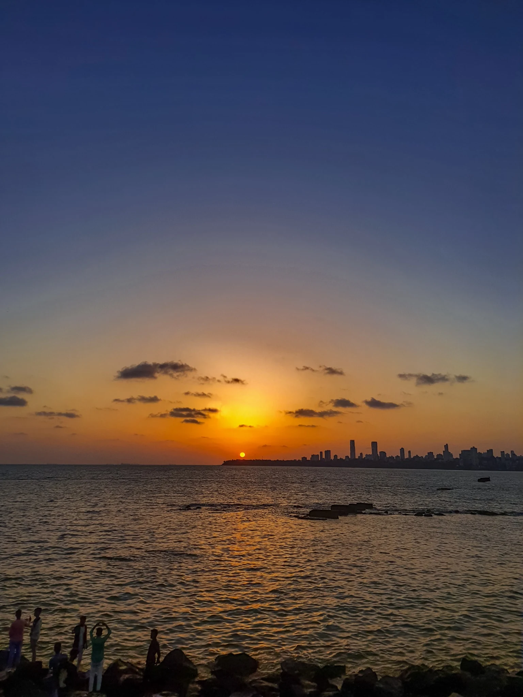
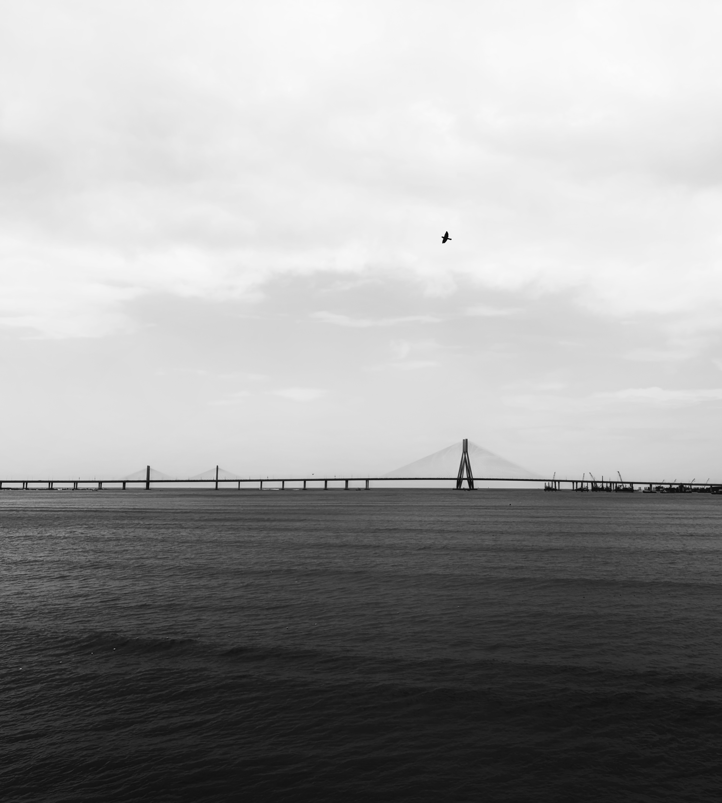
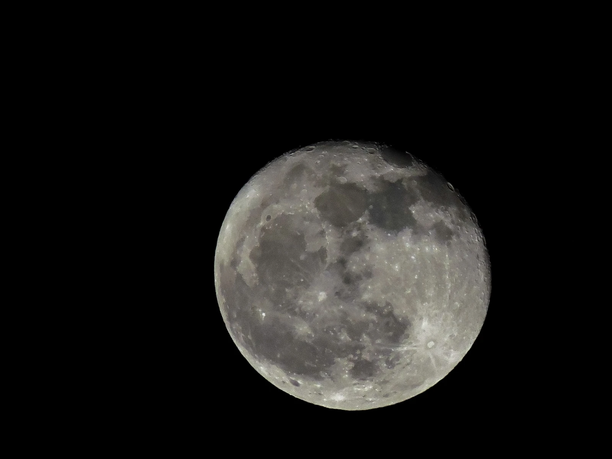
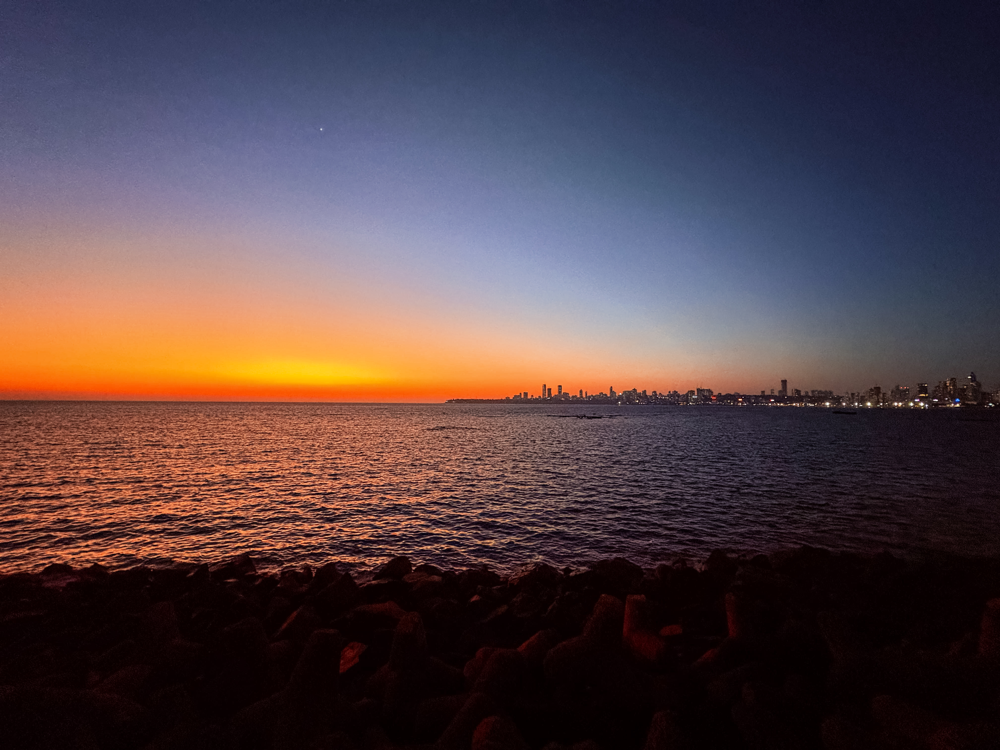

Rajasthan, India · 2026
Rajasthan
9 photographs
Colors, people and open landscapes from the land of kings. From the desert edges at sunrise to the quiet courtyards of old havelis, Rajasthan reveals itself slowly.




